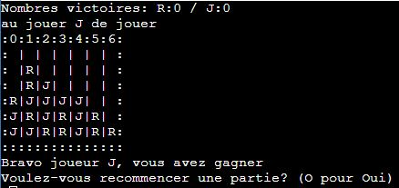
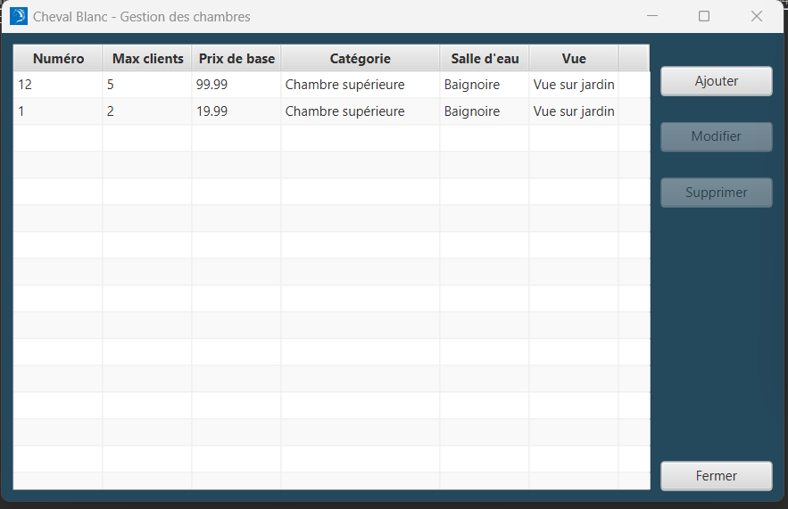
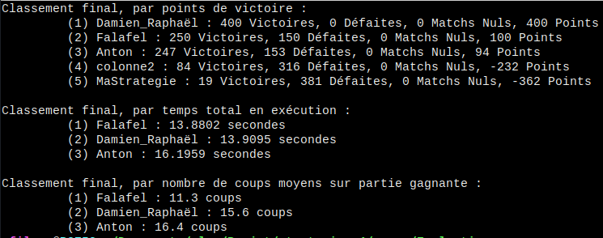
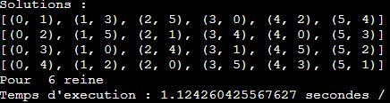
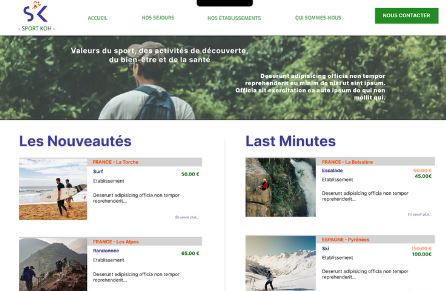
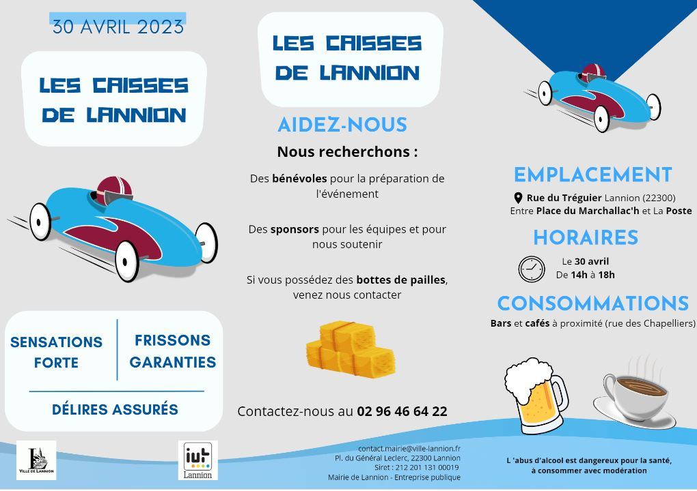
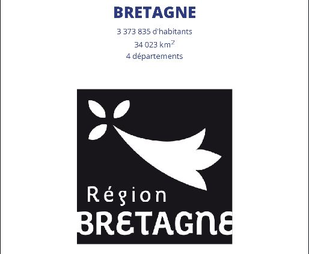
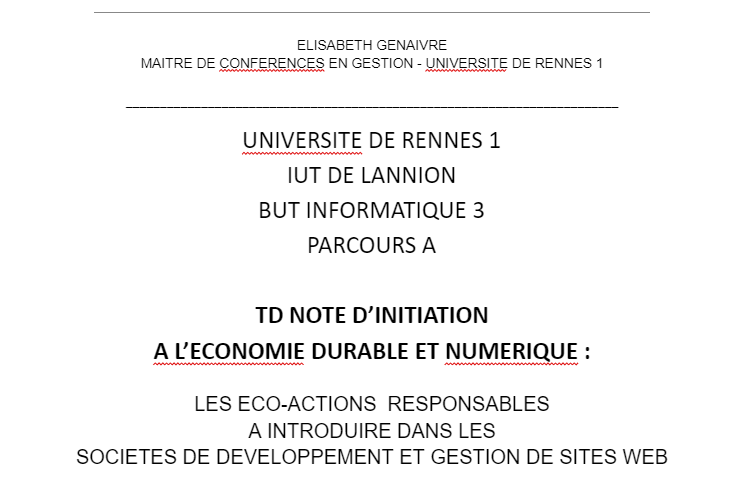
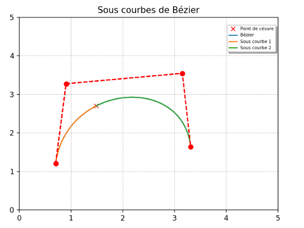

Outils

HTML 5
Le HTML principalement orienté front-end, dans la conception de site web.

CSS
Le CSS est orienté front-end, couplé avec le HTML ou encore JavaScript, il permet de gérer la mise en forme.

JavaScript
Le JavaScript permet la programmation d'éléments visuels, notamment pour un site web

Java
Le Java est un langage algorithmique orienté objet. Il permet à l'aide de librairies de faire des applications.

SQL
Le SQL est un langage principalement utilisé pour la gestion de base de données.

Langage C
Le langage C est un langage algorithmique bas-niveau (plus proche de la machine).
Mes Projets








